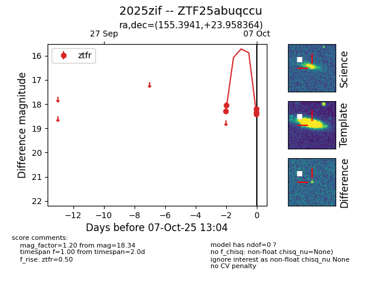
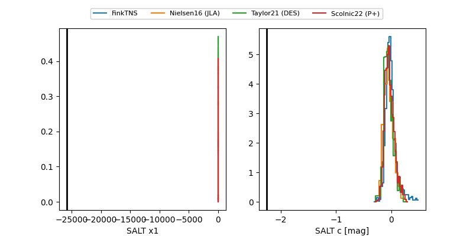

FINK: ZTF25abuqccu
Lasair: ZTF25abuqccu
ALeRCE: ZTF25abuqccu
TNS: 2025zif
YSE: 2025zif
ZTF25abuqccu (ztf,fink)
2025zif (tns,yse)
equatorial (ra, dec) = (155.3941,+23.95836)
galactic (l, b) = (209.7750,+56.17087)


last ztfr=18.34
5 ztfr detections